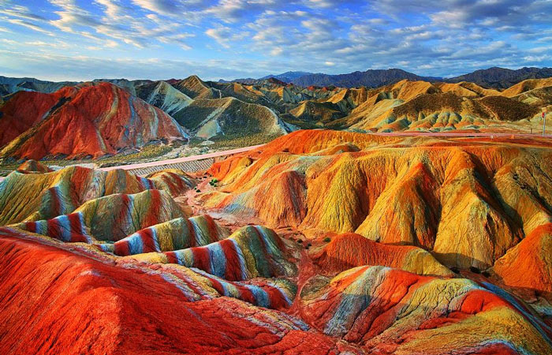

Меню
Меню
- 
-

Гора Рорайма
Эта красивая гора является своеобразным символом соседства южноамериканских государств Венесуэлы и Бразилии. Рорайма — это несколько горных хребтов, возвышающихся среди дебрей Амазонки. Известность это место приобрело после того, как было обозначено в романе Конан-Дойла о временах, когда Землю населяли динозавры, а горы служили им надёжным пристанищем. Ландшафт и атмосфера действительно производят впечатление изолированности от реального мира и являются неиссякаемым источником вдохновения.
Текст Текст Текст